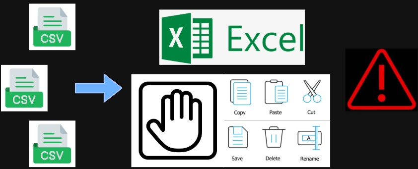
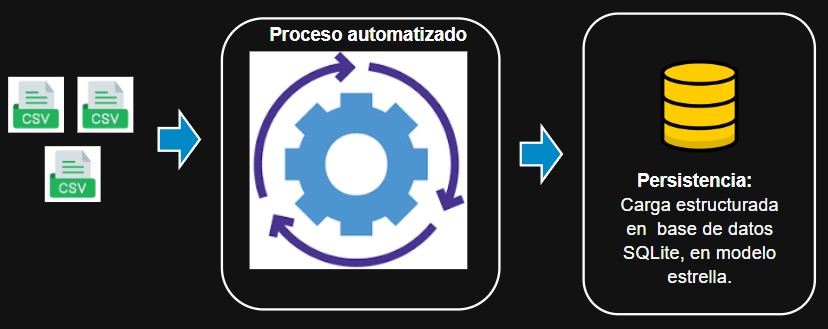
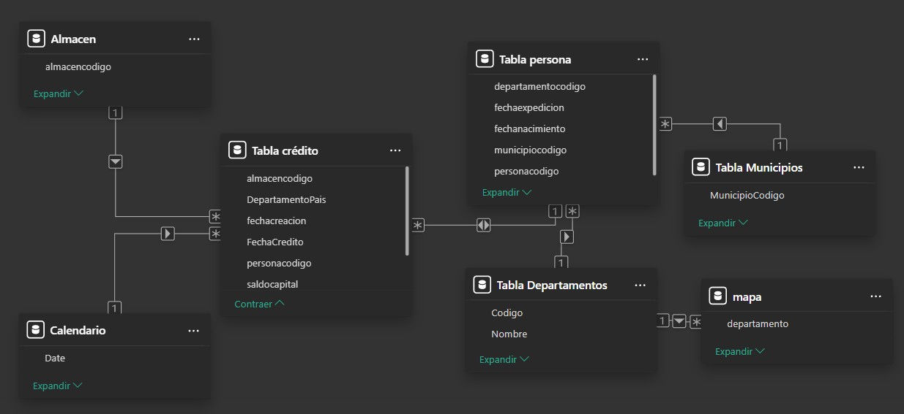
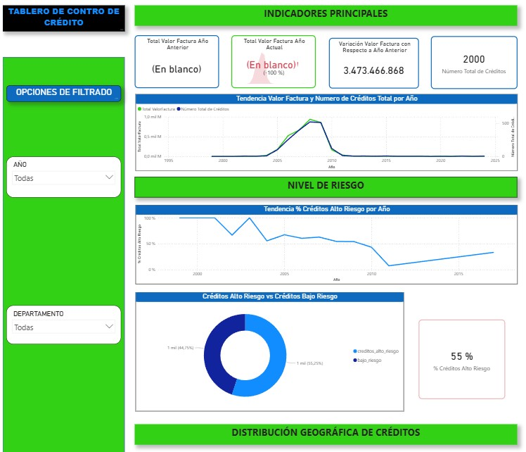
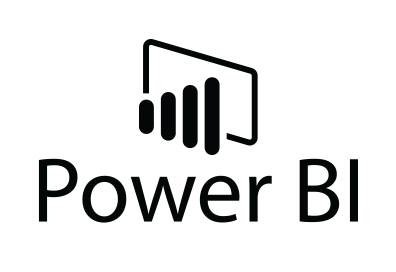

Ecosistema End to End de Inteligencia Financiera: Ingeniería de Datos y BI Analítico
Modernización de infraestructura de datos: De procesos manuales en archivos planos a un ecosistema automatizado con SQL, QA integrado y visualización estratégica.
Resumen
Este proyecto representa la transformación digital de una unidad de riesgo financiero que operaba sin una base de datos centralizada. Se implementó una solución integral de ingeniería en Python que estandariza el procesamiento, la seguridad y el almacenamiento de datos en SQLite. El sistema actúa como un "filtro de confianza", asegurando que solo los datos validados lleguen al tablero de control en Power BI, eliminando errores manuales y protegiendo la información sensible de los clientes.

El Desafío: El Riesgo de la Información Manual
En la entidad financiera, la gestión de datos dependía totalmente de procesos manuales y archivos Excel dispersos, careciendo de un motor SQL. Esta "oscuridad digital" generaba riesgos críticos para el área operativa:
- Inconsistencia de Datos: Sin validaciones automáticas, era imposible detectar registros duplicados o errores de digitación, alterando los cálculos de exposición crediticia.
- Vulnerabilidad de Privacidad: Datos sensibles de clientes (PII) circulaban sin protección, aumentando el riesgo de incumplimiento normativo.
- Ceguera Operativa: La consolidación de reportes tomaba horas de trabajo manual, impidiendo una reacción rápida ante alertas tempranas de riesgo crediticio.

Enfoque Técnico y QA Automatizado
Para resolver esto, diseñé un pipeline de Python con una filosofía "Fail-Fast" (Falla Rápido). Antes de realizar cualquier ingesta en la base de datos, el sistema ejecuta un bucle de validación de doble nivel:
- QA de Funcionamiento (Unit Testing): Suite de pruebas que verifica que la lógica de anonimización y generación de firmas digitales (SHA-256) sea infalible.
- QA de Datos (Data Quality Gates): Auditoría en tiempo real que rechaza archivos corruptos o con esquemas incorrectos antes de tocar la base de datos.
- Trazabilidad por Logs: Sistema de logs profesional para auditoría total de cada movimiento de datos.
Nota de Arquitectura: Se implementó un modelo desacoplado donde Power BI consume datos validados de forma incremental. Esto protege el rendimiento del sistema transaccional y respeta las restricciones de seguridad del ecosistema corporativo.

Resultados e Impacto en el Negocio
La transición de procesos manuales a este flujo automatizado generó un impacto inmediato en la eficiencia y seguridad de la unidad:
- Eficiencia Operativa: Reducción del 85% en el tiempo de preparación de reportes (de horas a menos de 10 minutos).
- Confiabilidad del 100%: Eliminación total de registros duplicados e inconsistentes gracias al sistema de deduplicación SHA-256.
- Protección de Datos: Anonimización automática del 100% de la información sensible, garantizando el cumplimiento de políticas de privacidad.
- Escalabilidad: Se estableció la primera infraestructura de datos sólida, lista para soportar futuros modelos predictivos.
Producto Final: Dashboard de Riesgos
Visualización estratégica de control de riesgo crediticio a través de dashboard en Power BI.
- Arquitectura de Datos: Modelo en Estrella (Star Schema) con relaciones 1:N entre la tabla de hechos (Créditos) y dimensiones clave (Personas, Almacenes, Geografía y Calendario), garantizando un filtrado eficiente y alto rendimiento.
- Inteligencia de Negocio (DAX): Desarrollo de métricas para el cálculo de Exposición de Riesgo.
- Visualización & UX: Dashboard interactivo con KPIs críticos y análisis granular por municipio/almacén.

Nota: Tablero basado en un modelo real en producción. La data expuesta y visualizada se encuentra totalmente anonimizada debido a su naturaleza confidencial.

Stack Tecnológico
 Python
Python Pandas
Pandas
Power BIPythonPandas